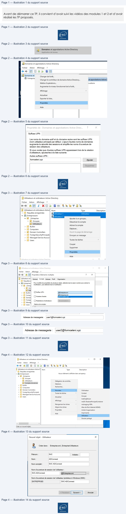
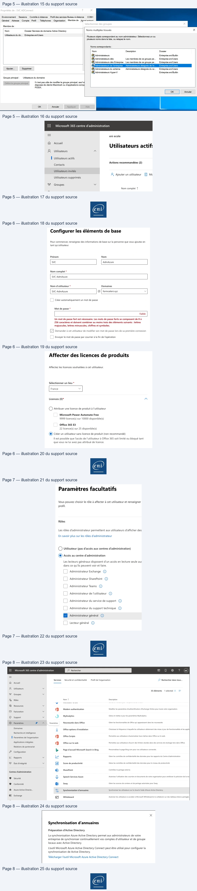
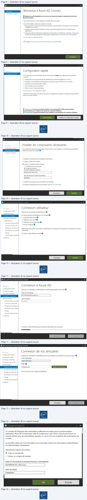
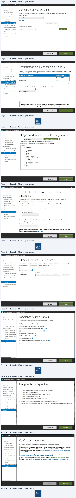
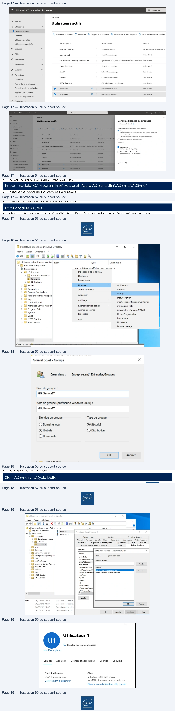

Correction — TP 02 — Azure AD Connect¶
La transcription du support Drive et l’aide pédagogique sont séparées pour rendre leur provenance explicite.
Dossier Module 3 conservé à la demande de l’utilisateur : les cinq fichiers sont des copies exactes de ceux du Module 2 (empreintes SHA-256 identiques). Le titre interne indique Module 02 — Administration Microsoft 365. Aucun support distinct du Module 3 n’a été fourni.
SOURCE DRIVE · TRANSCRIPTION DU SUPPORT
Le contenu des documents du dossier TSSR est transcrit ci-dessous, page par page. Les textes, tableaux et illustrations sont intégrés à la page Web ; aucun PDF ENI n’est diffusé par ce lecteur. Les versions et les consignes restent celles des supports de formation. Les compléments IA sont conservés dans leur onglet distinct.
Correction · M2 - Solution du TP 2 - Azure AD Connect · 19 pages transcrites
Dossier Module 3 conservé à la demande de l’utilisateur : les cinq fichiers sont des copies exactes de ceux du Module 2 (empreintes SHA-256 identiques). Le titre interne indique Module 02 — Administration Microsoft 365. Aucun support distinct du Module 3 n’a été fourni.
Correction originale : à consulter après avoir tenté l’exercice.
Page 1
Cloud et Microsoft 365
Azure AD
TP 02 du Module 02 – Administration Microsoft 365
Avant de démarrer ce TP, il convient d’avoir suivi les vidéos des modules 1 et 2 et d’avoir
réalisé les TP proposés.
Solution
Il faut maintenant préparer l’Active Directory ; une liste d’étapes sera à effectuer :
1. Ajouter un suffixe DNS.
2. Remapper le suffixe DNS des utilisateurs existants (attention aux impacts sur les logins
utilisateurs selon le mode de connexion).
3. Renseigner l’adresse mail dans les comptes utilisateurs.
4. Créer une OU spécifique pour le compte de service et créer un compte de service
administrateur de l’entreprise pour la synchronisation AD.
5. Créer un compte Microsoft 365 administrateur général.
Page 1/19
© ENI – Tous droits réservés
Page 2
Cloud et Microsoft 365
•
Ouvrez la console Domaines et approbations Active Directory
•
Sur Domaines et approbations, effectuez un clic droit / Propriétés et ajoutez le nom de
domaine public utilisé dans votre tenant Microsoft 365 et cliquez sur Ajouter puis OK.
•
Ouvrez la console Utilisateurs et ordinateurs Active Directory.
•
Sélectionnez les utilisateurs qui seront à synchroniser et effectuez un clic droit /
Propriétés. Dans l’onglet compte, cochez la case Suffixe UPN et sélectionnez le suffixe
UPN que vous venez d’ajouter. Cliquez sur OK.
NB : cette opération peut avoir de forts impacts sur la production si les utilisateurs se
connectent avec le format UPN. Assurez-vous de la méthode de connexion avant de
réaliser cette action.
Page 2/19
© ENI – Tous droits réservés
Texte relevé dans les illustrations
|
Domaines et approbations Active Directory
Application de bureau
a Domaines et approbations Active Directory
Fichier
Action
Affichage
7?
eo, HOGS \ EE
|hoonet
Changer de forêt.
ti
;
;
mrepns)
Changer le contrôleur de domaine Active Directory...
et approbations Active [
Maitre d'opérations...
s actions
Augmenter le niveau fonctionnel de la forêt.
Affichage
>
Actualiser
Exporter la liste...
Propriétés
Aide
Suffixes UPN
Les noms du domaine actif et du domaine racine sont les suffices IPN
(nom utilisateur principal) par défaut. L'ajout d'autres noms de domaines
augmente la sécunté des sessions et simplifie les noms d'ouverture de
session des utilisateurs.
Si vous voulez que d'autres suffixes UPN apparaissent lors de la création
d'utilisateurs, ajouteztes à la liste suivante.
Autres suffices UPN
:
formoeleni, xyz
Ajouter
Supprimer
Page 3
Cloud et Microsoft 365
•
Modifiez l’adresse mail des deux comptes :
•
Créez une nouvelle OU Comptes de services et créez le compte qui sera utilisé pour la
synchronisation AD.
Page 3/19
© ENI – Tous droits réservés
Texte relevé dans les illustrations
Dy Utilisateurs et ordinateurs Active Directory
Fichier
Action
Affichage
?
ed 40
¢ XOB Em teevrae
BF Utilisateurs
et ordinateurs Active! Nom
Type
Description
>a
Requêtes enregistrées
+ A Utilisateur 1
Utilisateur
¥ # Entreprise.eni
LA Utilisateur 2
v Bi _Entreprise
Ajouterà un groupe...
> al Groupes
Désactiver le compte
Mir
Activer le compte
> © Builtin
+
> © Computers
Déplacer...
> El Domain Controllers
Ouvrir la page de démarrage
> © ForeignSecurityPrincipals
Envoyer un message
> [fi Managed Service Accoun
> ©
Users
Toutes les taches
>
Couper
Supprimer
Propriétés
Aide
iJ
Utilisateurs
et
teurs Active Director
Qo
x
Fichier
Action
_Affichage
?
¢o9 4
Propriétés d'éléments multiples
?
x
EI Utilisateurs
et} Général Compte Adresse
Profil
Organisation
> DB Requêtes
¥ ii Entreprise]
| Pour modifier les propriétés de plusieurs objets, sélectionnez
la case à cocher pour activer la
-
modification, puis sélectionnezla modification
v Bi _Entrey
> El Gr
1 uti
à
@Entreprise eni
SP)
Horas dois:
> D Foreigf
Cy restrictions d'ordinateurs :
Se connecterà.
> [ Mana
> Gi Users
Options
de compte :
ael
Adresse
de messagene :
user! @formceleni.xyz
Adresse de messagene:
|user@fommeeleni.xyz
ent
Page 4
Cloud et Microsoft 365
•
Allez dans les propriétés du compte Active Directory et dans l’onglet Membre de,
ajoutez le groupe Administrateurs de l’entreprise.
Page 4/19
© ENI – Tous droits réservés
Texte relevé dans les illustrations
1 Utilisateurs et ordinateurs Active Directory
-
o
x
Fichier
Action
Affichage
7
e+2nr
D OSB Es teaerae
J] Utilisateurs
et ordinateurs Active 0]! Nom
Type
Description
» Di Requêtes enregistrées
+ i Entrepriseeni
Aucun élémentà afficher dans cet aperçu.
v Bi Entreprise
>
[Bi Groupes
{GJ Utilisateurs
Délégation de contrôle...
Bl Comptes de service
. lacer..
> LI Builtin
Dép
> D Computers
Rechercher...
> El Domain Controllers
Men
>
Ordinateur
>
(Gl ForeignSecurityPrincipals
SESS
,
ene
>
If] Managed Service Accounts
> (Users
Actualiser
ET
InetOrgPerson
Affichage
.
msDS-ShadowPrincipalContainer
Réorganiser les icônes
>
msimaging-PSPs
Aligner les icônes
Alias de file d'attente MSMQ
Propriétés
Unité d'organisation
Aida
Imprimante
Utilisateur
Dossier partagé
<
>
Créer un nouvel objet...
Nouvel objet - Utilisateur
x
LA
Créer dans : Entrepnse.eni/_Entrepnse/Utilisateurs
Prénom
:
svc
Initiales:
Nom
:
ADConnect
Nom complet :
SVC ADConnect
Nom d'ouverture de session de l'utilisateur :
SVC-ADConnect
v
Nom d'ouverture de session de l'utilisateur (anténeur à Windows 2000) :
ENTREPRISE\
SVC-ADConnect
<a
pere

Page 5
Cloud et Microsoft 365
Création d’un compte administrateur général dans la console
Microsoft 365
•
Ajoutez un nouvel utilisateur.
•
Renseignez les champs nécessaires et n’affectez pas de licence.
Page 5/19
© ENI – Tous droits réservés
Texte relevé dans les illustrations
Environnement
Sessions
Controleà distance Profil des services Bureau à distance
COM+
Général
Adresse
Compte
Profil
Téléphones
Organisation
Membre de | Apnal antrant
Membre de
:
Nom
Dossier Services de domaine Active Directory
Noms multiples trouvés
x
CCC Cr om Users
Plusieurs objets correspondent au nom administrateur. Sélectionnez un ou
plusieurs noms dans la liste,ou retapez
le nom.
Noms comespondants
Nom
Description
Dossier
BB Administrateurs
Entreprise.eni/Builtin
RE Administrateurs clés
Lesmembres
de ce groupe pe... Entreprise.eni/Users
82,Administrateurs clés Enterprise
Les membres de ce groupe pe.
Entreprise eni/Users
a
Ajouter...
Supprimer
BB Administrateurs du schéma
Administrateurs désignés du sc...
Entreprise.eni/Users
RE Administrateurs Hyper-V
Entreprise.eni/Builtin
Groupe principal:
_Utilsateurs du domaine
Il n'est pas utile de modifierle groupe principal, sauf
Defnir le groupe principal
disposez de clients Macintosh ou d'applications cor
POSIX.
OK
Annuler
OK
Annuler
Appliquer
Aide
HI
Microsoft 365 centre d'administration
=
eni ecole
{à
Accueil
ene
.
Utilisateurs actif:
2
Utilisateurs
a
I
Utilisateurs actifs
Actions recommandées (2)
Contacts
Utilisateurs invités
À, Ajouter un utilisateur
El Mc
Utilisateurs supprimés
*s8
Groupes
Vv
Nom complet T
Page 6
Cloud et Microsoft 365
•
Ajoutez le rôle administrateur général.
Page 6/19
© ENI – Tous droits réservés
Texte relevé dans les illustrations
Configurer les éléments de base
Pour commencer, renseignez des informations de base sur la personne que vous ajoutez en
tant qu'utilisateur.
Prénom
Nom
Nom complet *
SVC AdmAzure
Nom d'utilisateur *
Domaines
[|
Créer automatiquement un mot de passe
Mot de passe *
Un mot de passe fort est nécessaire. Les mots de passe forts se composent de 8 à
256 caractères et doivent combiner au moins trois des éléments suivants
: lettres
majuscules, lettres minuscules, chiffres et symboles.
Demanderà cet utilisateurde modifier son mot de passe lors de sa première connexion
[_] Envoyer le mot de passe par courrier à la fin de l'opération
:
:
Affecter des licences de produits
Affectez les licences souhaitées à cet utilisateur.
Sélectionner un lieu *
Licences (0)*
“A
CO Attribuer une licence de produit à l'utilisateur
Microsoft Power Automate Free
9999 licence(s) sur 10000 disponible(s)
Office 365 E3
22 licence(s) sur 25 disponible(s)
© Créer un utilisateur sans licence de produit (non recommandé)
Il est possible que l'accès de l'utilisateur à Office 365 soit limité ou bloqué tant
que vous ne lui avez pas attribué de licence
Page 7
Cloud et Microsoft 365
Installation d’Azure AD Connect
•
Dans votre console Microsoft 365, allez dans Paramètres / Paramètres de l’organisation
et cherchez Synchronisation d’annuaires.
Page 7/19
© ENI – Tous droits réservés
Texte relevé dans les illustrations
>
.
Paramètres facultatifs
Vous pouvez choisir le rôle à affecter à cet utilisateur et renseigner
profil.
Rôles
Les rôles d'administrateur permettent aux utilisateurs d'afficher des
En savoir plus sur les rôles d'administrateur
O Utilisateur (pas d'accès aux centres d'administration)
© Accès au centre d'administration
Les lecteurs généraux disposent d'un accès en lecture seule au
dans ce qu'ils peuvent voir et faire
{| Administrateur Exchange ©
| Administrateur SharePoint @
CL Administrateur Teams @
CL Administrateur de l'utilisateur ©
{| Administrateur du service de support ©
{| Administrateur du support technique ©
Administrateur général @
CL Lecteur général @
Page 8
Cloud et Microsoft 365
•
Téléchargez ensuite l’outil Azure AD Connect.
•
Exécutez le fichier MSI téléchargé précédemment.
Page 8/19
© ENI – Tous droits réservés
Texte relevé dans les illustrations
iH
Microsoft 365 centre d'administration
A
Rechercher
E
QO
&
?
(mc)
Services
Sécurité et confidentialité
Profil de l'organisation
A Rechercher dans tous...
Accueil
—
A
Utilisateurs
v
35 éléments
1 selected X =
Groupes
v
Fa
Rôles
Nom
?
Description
Ressources
v
0
Modern authentication
Modifier les paramètres d'authentification d'Exchange Online pour toute votre organisation.
3
Facturation
v
@
support
C
SD
Myanabties
Gérez et mettez à jour les paramètres MyAnalytics,
Paramètres
#
A
paramètres
Nouveautés dans Office
Gérer les fonctionnalités de Office qui apparaissent dans les nouveautés
Domaines
Office options d'installation
Choisissez
la fréquence à laquelle les utilisateurs obtiennent des mises à jour de fonctionnalités et les appli
Recherche et intelligence
1 paramètres de l'organisation
A
office Scripts
Permettre aux utilisateurs d'automatiser leurs tâches dans Office sur
le web.
Applications intégrées
M
office surte web
Permettez aux utilisateurs d'ouvrir des fichiers stockés dans des services de stockage tiers dans Offic.
Relations de partenariat
[>
Page d'accueil Microsoft Search in Bing
Personnalisez la page Bing com pour vos utilisateurs connectés
@
Configuration
LA
Rapports
Lv
LZ
Rapports
Gérer les contrôles de confidentialité des données pour les rapportsdu Centre d'administration
©
État d'intégrité
v
Score de productivité
Gérez les contrôles de confidentialité
des données pour le niveau de productivité.
a
EH
SharePoint
Contrôlez le partage externe.
Centres d'administration
© Sirté
G
Speech Services Azure
Autorisez l'utilisation des courriers et documents de votre organisation pour améliorer la précision de la rec
®
Conformité
sway
Gérer les sources de contenu et de partage autorisées pour Sway.
®
Azure Active Directo.
TL
Synchronisation d'annuaires
Synchroniser les utilisateurs sur le cloud à l'aide d’Azure Active Directory.
CY stm
EÂ
Whiteboard
Autoriser les utilisateursà accéderà Microsoft Whiteboard et à collaborer
sur des tableaux blancs partagés.
x
«gs
,
.
Synchronisation d'annuaires
Préparation d'Active Directory
La synchronisation Azure Active Directory permet aux administrateurs de votre
entreprise de synchroniser continuellement vos comptes d'utilisateur et de groupe
locaux avec Active Directory.
L'outil Microsoft Azure Active Directory Connect peut être utilisé pour configurer la
synchronisation de Active Directory.
Télécharger l'outil Microsoft Azure Active Directory Connect

Page 9
Cloud et Microsoft 365
•
Cliquez sur Personnaliser.
•
Cochez Utiliser un compte de service existant et entrez le compte administrateur de
l’entreprise créé précédemment (AD). Cliquez sur Installer.
Page 9/19
© ENI – Tous droits réservés
Texte relevé dans les illustrations
>
-
x
|
.
N
rever
Bienvenue à Azure AD Connect
Configuration rapide
Exécutez cet outil d'installation sur le serveur sur lequel sera installé le composant du service de
synchronisation.
Azure Active Directory Connect intègre vos annuaires locaux et en ligne.
Cet outil d'installation effectue les opérations suivantes
* Vous guide dans le choix d'une solution (par exemple, la synchronisation de hachage du mot de passe ou
la fédération avec AD FS)
©
Installer la synchronisation d'identité et d'autres composants logiciels Microsoft nécessaires pour le
déploiement
* Activez par défaut la télémétrie de l'application et les données sur l'intégrité du composant. Vous pouvez
modifier les données partagées avec Microsoft en mettant à jour vos paramètres de confidentialité,
En savoir plus sur l'identité hybride
M] J'accepte le termes de la licence et le déclaration de confidentialité.
Continuer
>
+ Azure Active Direct:
ect
_
x
Configuration rapide
Si vous disposez d'une forêt Windows Server Active Directory unique, nous effectuerons les opérations
suivantes
:
+ Configuration de la synchronisation des identités dans la forêt AD actuelle de ENTREPRISE
* Configurer la synchronisation de hachage du mot de passe a partir d'AD local vers Azure AD
© Lancement d'une synchronisation initiale
Synchronisation de tous les attributs
+ Activer la mise à niveau automatique
En savoir plus sur la configuration rapide
Sélectionnez Personnaliser pour choisir des options de déploiement avancées ou importer des paramètres à
partir d'un serveur existant.
Entreprise.eni n'est pas un domaine routable. Il est recommandé d'utiliser des paramètres
personnalisés pour configurer des options de connexion utilisateur.
En savoir plus à propos des domaines non routables et des paramètres de connexion utilisateur.
Personnaliser
Utiliser la configuration rapide
Page 10
Cloud et Microsoft 365
•
Cochez Synchronisation de hachage du mot de passe et cliquez sur Suivant.
•
Entrez le compte administrateur général créé précédemment (Compte Azure).
Page 10/19
© ENI – Tous droits réservés
Texte relevé dans les illustrations
>
Mic
t
)i
fr
-
x
L
.
sven
Installer les composants nécessaires
Configuration rapide
.
;
;
.
Aucun service de synchronisation existant n'a été trouvé sur cet ordinateur. Le service de synchronisation
Composants requis
Azure AD Connect sera installé. @
Connexion utilisateur
Spécifier un emplacement d'installation personnalisé
LT Utiliser un SQL Server existant
VJ Utiliser un compte de service existant
D Compte de service administré
© Compte de domaine
NOM DU COMPTE DE SERVICE
Entreprise\SVC-ADConnect
MOT DE PASSE DU COMPTE DE SERVICE
ET Spécifier des groupes de synchronisation personnalisés
[] importer les paramètres de synchronisation (Aperçu) En savoir plus
Heel
>
5
fs:
Configuration rapide
9
P
Sélectionnez la méthode d'authentification. @
Composants requis
©
a
Synchronisation de hachage du mot de passe @
Connexion
4 Azure AD
D Authentification directe @
Fédération avec AD FS @
Synchronisation
D Fédération avec PingFederate @
Connexion des annuaire
©
Ne
pas configurer
Connexion à Azure AD
P
9
Filtrage par domaine/un|
—_s¢tectionnez cette option pour activer l'authentification unique pour les utilisateurs d'ordinateurs de bureau
Identification des utilisa
d'entreprise
Filtrage
[] Activer l'authentification unique @
Fonctionnalités facultati'
Configurer
Précédent
Suivant
Page 11
Cloud et Microsoft 365
•
Cliquez sur Ajout d’un domaine.
•
Laissez Créer un compte AD coché et entrez les identifiants du compte de service et
Page 11/19
© ENI – Tous droits réservés
Texte relevé dans les illustrations
& Microsoft Azure Active Directory Connect
-
X
:
N
:
Connexion à Azure AD
Configuration rapide
a
.
.
.
.
.
Saisissez vos informations d'identification d'administrateur général Azure AD. @
Composants requis
NOM D'UTILISATEUR
Connexion utilisateur
un
SVC-AdmAzure@formceleni:
Connexion a Azure AD
mAzure@formeelenixyz
Synchronisation
MOT DE PASSE
Connexion des annuaire
cos.
Connexion à Azure AD
Filtrage par domaine/un|
Identification des utilisat}
Filtrage
Fonctionnalités facultati
Configurer
Connexion à Microsoft Online pour vérifier les informations de connexion.
mms
Précédent
Suivant
@ Microsoft Azure Active Directory Connect
-
x
Configuration rapide
.
Li
oe
.
Saisissez les informations d'identification pour les annuaires ou les batteries de serveurs locaux. @
Composants requis
TYPE D'ANNUAIRE
Connexion utilisateur
ET
Active Directory
~
Connexion à Azure AD
Synchronisation
FORÊT @
Connexion des annuaire:
Entreprise.eni
*
Ajout d'un annuaire
Connexion à Azure AD
Aucun annuaire n'est configuré actuellement.
Filtrage par domaine/un|
Identification des utilisat
Filtrage
Fonctionnalités facultatiy
Configurer
Précédent
Suivant
Page 12
Cloud et Microsoft 365
entrez à nouveau les identifiants du compte administrateur de l’entreprise créé
précédemment (AD).
•
Cliquez sur Suivant.
Page 12/19
© ENI – Tous droits réservés
Texte relevé dans les illustrations
>
t
forét
>
&
Un compte AD disposant des autorisations suffisantes est requis pour la synchronisation
périodique. Azure AD Connect peut créer le compte pour vous. Sinon, vous pouvez fournir un
compte existant avec les autorisations requises. En savoir plus sur la gestion des autorisations de
compte.
La première option est recommandée et vous demande d'entrer les informations d'identification
de l'administrateur d'entreprise.
Sélectionnez l'option de compte.
© Créer un compte AD
©
Utiliser un compte AD existant
NOM D'UTILISATEUR D'ADMINSITRATEUR D'ENTREPRISE
ENTREPRISE\SVC-ADConnect
MOT DE PASSE
OK
Annuler

Page 13
Cloud et Microsoft 365
•
Laissez l’UPN comme attribut à utiliser comme nom d’utilisateur AD, cochez Continuer
sans faire correspondre tous les suffixes UPN à des domaines vérifiés et cliquez sur Suivant.
•
Filtrez les Unités d’organisation en cochant Synchroniser les domaines et les unités
Page 13/19
© ENI – Tous droits réservés
Texte relevé dans les illustrations
Microsoft Azure Active Directory Connect
-
x
y
ier
Connexion de vos annuaires
Configuration rapide
|
.
.
.
oye
Saisissez les informations d'identification pour les annuaires ou les batteries de serveurs locaux. @
Composants requis
TYPE D'ANNUAIRE
Connexion utilisateur
—
Active Directory
X
Connexion à Azure AD
Synchronisation
FORÈT @
Connexion des annuaire:
~
Ajout
d'un annuaire
Connexion à Azure AD
RÉPERTOIRES CONFIGURÉS
Filtrage par domaine/un|
rendre cure|
Entreprseeni (Active Directory) @
Filtrage
Fonctionnalités facultati
Configurer
Précédent
Suivant
jenvenue
Configuration de la connexion à Azure AD
Configuration rapide
Pour se connecter à Azure avec les mêmes informations d'identification que votre annuaire local, un domaine
Composants requis
Azure AD correspondant est requis.
Le tableau suivant liste les suffixes UPN de votre environnement local et
l'état du domaine AD Azure associé. @
Connexion utilisateur
Connexion à Azure AD
Suffixe UPN Active Directory
Domaine Azure AD
Synchronisation
entreprise.eni
Non ajouté @
Connexion des annuaire!
formceleni.xyz
Vérifié
Connexion à Azure AD
Q
Filtrage par domaine/un
Identification des utilisa
Sélectionnez l'attribut local à utiliser comme nom d'utilisateur Azure AD
Filtrage
NOM D'UTILISATEUR PRINCIPAL[7]
Fonctionnalités facultati
userPrincipalName
+
Configurer
M1 Continuer sans faire correspondre tous les suffixes UPN à des domaines vérifiés
Les utilisateurs ne pourront pas se connecter à Azure ADà l'aide d'informations d'identification
locales si le suffixe UPN ne correspond pas à un domaine vérifié. En savoir plus
Précédent
Suivant
Page 14
Cloud et Microsoft 365
d’organisation sélectionnés, cochez uniquement les utilisateurs et les groupes. Ces OU
nous seront nécessaires pour la suite de ce cours.
•
Cliquez sur Suivant.
Page 14/19
© ENI – Tous droits réservés
Texte relevé dans les illustrations
@ Microsoft Azure Active Directory Connect
-
x
Filtrage par domaine ou unité d'organisation
Configuration rapide
.
——
-
-
Annuaire : Entreprise.eni
ù
Actualiser les domaines
[(?]
Composants
requis
O
Synchroniser
tous les domaines et toutes les unités d'organisation
Connexion utilisateur
_
.
k
:
a
"
©
Synchroniser les domaines et les unités d'organisation sélectionnés
Connexion à Azure AD
Synchronisation
4
_Entreprise.eni
4 D Entreprise
Connexion des annuaire
Comptes de service
Connexion à Azure AD
Vi Groupes
"
"
Y)
Utilisateurs
Filtrage par domaine/un:
CO
Builtin
identification des utilisat}
LJ Computers
rile
CT
Domain Controllers
iltrage
.
g
ForeignSecurityPrincipals
Fonctionnalités facultati
U
Infrastructure
Configurer
LJ LostAndFound
LT Managed Service Accounts
Program Data
LJ
System
Users
Précédent
Suivant
@ Microsoft Azure Active Directory Connect
-
x
coven
Identification de maniére unique de vos
Configuration rapide
utilisateurs
Composants requis
Connexion utilisateur
Sélectionnez la manière dont les utilisateurs doivent être identifiés dans vos annuaires locaux. @
Connexion à Azure AD
® Les utilisateurs ne sont représentés qu'une fois sur tous les annuaires.
Synchronisation
Les identités utilisateurs existent sur plusieurs annuaires. Correspondance à l'aide de:
Connexion des annuaire!
® Attribut de messagerie
Connexion à Azure AD
Attributs ObjectSID et msExchMasterAccountSID/msRTCSIP-OriginatorSID
Filtrage par domaine/un|
Attributs SAMAccountName et MailNickName
Identification des utilisat|
Un attribut spécifique
Filtrage
Fonctionnalités facultati
Configurer
Sélectionnez la manière dont les utilisateurs doivent être identifiés auprès d'Azure AD. @
® Laisser Azure gérer l'ancre source
Choisir un attribut spécifique
Azure est actuellement synchronisé à l'aide de mS-DS-ConsistencyGuid et réécrira l'ancre source
pour vos utilisateurs locaux. En savoir plus
Précédent
Suivant
Page 15
Cloud et Microsoft 365
•
Cliquez sur Suivant.
•
Cliquez sur Suivant puis Installer.
Page 15/19
© ENI – Tous droits réservés
Texte relevé dans les illustrations
@ Microsoft Azure Active Directory Connect
-
x
Configuration rapide
.
.
.
.
.
Pour un déploiement pilote, spécifiez un groupe contenant les utilisateurs et appareils à synchroniser. Les
Composants requis
groupes imbriqués ne sont pas pris en charge et sont ignorés.
Connexion utilisateur
e
© Synchroniser tous les utilisateurs et les appareils
Connexion à Azure AD
-
.
a
*
“
> Synchronisation choisie@
Synchronisation
FORET
GROUPE
Connexion des annuaire
.
Connexion à Azure AD
Filtrage par domaine/un|
Identification des utilisat
Filtrage
Fonctionnalités facultati
Configurer
Précédent
Suivant
@ Microsoft Azure Active Directory Connect
=
Fonctionnalités facultatives
Configuration rapide
.
;
Sélectionnez la fonctionnalité améliorée si votre organisation le demande
Composants requis
Connexion utilisateur
Déploiement Exchange hybride @
Connexion à Azure AD
Dossiers publics de la messagerie Exchange @
Synchronisation
[] Filtrage des applications et des attributs Azure AD @
c
on
des
annua
ennexion
Ges annualre
4 Synchronisation de hachage du mot de passe @
Connexion a Azure AD
:
C] Réécriture du mot de passe @
Filtrage par domaine/un
Écriture différée de
groupe
Identification des utilisa
groupe @
Filtrage
Réécriture d'appareil @
Fonctionnalités facultatiy
[] Synchronisation des attributs des extensions d'annuaire @
Configurer
En savoir plus à propos des fonctionnalités facultatives.
Précédent
Suivant
Page 16
Cloud et Microsoft 365
•
Dans un contexte de production, pensez à activer la corbeille Active Directory.
•
Dans la console Microsoft 365, notez l’apparition des deux utilisateurs créés
précédemment et affectez-leur une licence.
Page 16/19
© ENI – Tous droits réservés
Texte relevé dans les illustrations
@ Microsoft Azure Active Directory Connect
-
x
ven
Prét pour
la configuration
Configuration rapide
.
.
Cliquer sur Installer entraîne les actions suivantes
:
Composants requis
* Configuration des services de synchronisation sur cet ordinateur
Connexion utilisateur
© Configurer Attribut d'ancre source
Connexion à Azure AD
.
* Configurer testeniecole.onmicrosoft.com
- AAD Connecteur
Synchronisation
.
.
+ Configurer Entreprise.eni Connecteur
Connexion des annuaire,
* Activer Synchronisation de hachage du mot de passe
Connexion a Azure AD
M] Démarrez le processus de synchronisation une fois la configuration terminée.
Filtrage par domaine/un
Activer le mode de préproduction : quand il est sélectionné, la synchronisation n'exporte aucune donnée ve
Identification des utilisat
Filtrage
Fonctionnalités facultati
Configurer
Précédent
Installer
& Microsoft Azure Active Directory Connect
-
x
«
Configuration terminée
Configuration rapide
.
.
Configuration d'Azure AD Connect réussie. Le processus de synchronisation a été lancé.
Composants requis
Connexion utilisateur
La configuration est terminée. Vous pouvez à présent vous connecter au portail Azure ou Office 365
c
avure
AD
pour vérifier que les comptes utilisateurs de votre répertoire local ont été créés. Effectuez ensuite un
onnexion a
Azure
essai d’authentification sur le portail Azure. En savoir plus sur les étapes suivantes et la gestion
Synchronisation
d'Azure AD Connect
Connexion des annuaire!
La corbeille Active Directory n'est pas activée pour votre forêt (Entreprise.eni) et est recommandée.
Connexion à Azure AD
En savoir plus sur l'activation de la corbeille Active Directory
Filtrage par domaine/un
Azure Active Directory est configuré pour utiliser l'attribut AD mS-DS-ConsistencyGuid comme
attribut d'ancre source. En savoir plus sur la configuration de l'attribut d'ancrage source
Identification des utilisat
Filtrage
Fonctionnalités facultati
Configurer
Précédent
Quitter

Page 17
Cloud et Microsoft 365
•
Tentez ensuite de vous connecter avec user1 et user2 et vérifiez qu’ils accèdent bien
aux services Microsoft 365.
•
Forcer la synchronisation AD Connect.
Import-module "C:\Program Files\Microsoft Azure AD Sync\Bin\ADSync\ADSync"
•
Installer le module PowerShell AzureAD
Install-Module AzureAD
•
Ajoutez des groupes de sécurité dans l’unité d’organisation créée précédemment
•
Créez un groupe de sécurité que vous nommerez GG_ServiceIT
Page 17/19
© ENI – Tous droits réservés
Texte relevé dans les illustrations
Hi
Microsoft 365 centre d'administration
A
Rechercher
=
eni ecole
À
Accueil
ene
.
Utilisateurs actifs
Q
Utilisateurs
a
I
Utilisateurs actifs
Gann
À, Ajouter un utilisateur
() Actualiser
&, Supprimer l'utilisateur © Réinitialiser le mot de passe
[ Gérer les licences de produits
Utilisateurs invités
Utilisateurs supprimés
Nom complet T
Nom d'utilisateur
Licences
‘#
Groupes
de
Maxime CARADEC
=
max@formcelenixyz
Microsoft Power Automate Free,
Pa
Rôles
Maxime test
:
mtest@formceleni.xyz
Office 365 £3
r
v
:
Æ
Ressources
On-Premises Directory Synchroniza...
2
SyncENI-WS2019_0903055238de@testeniecole.onmicros:.
Sans licence
5
Facturation
v
:
Powershell User
:
PSuser@formceleni.xyz
Office 365 E3
@
Support
v
.
Salle01
:
Salle01@formceleni xyz
Sans licence
#&*
Paramètres
A
Support
:
support@formceleni xyz
Sans licence
Domaines
Recherche et intelligence
SVC AdmAzure
:
SVC-AdmAzure@formceleni.xyz
Sans licence
Paramètres de l'organisation
©
Utilisateur1
Qi:
user! @formceleni xyz
Sans licence
Applications intégrées
:
©
Utilisateur2
Œ
:
user2@formeelenixyz
Sans licence
Relations de partenariat
@
Configuration
x
Gérer les licences de produits
2 utilisateurs sélectionnés ©
‘Que voulez-vous faire des licences de ces utilisateurs?
© remplacer
Annuler attribution de licences existants et en attribuer de nouvelles.
O saber d'autres icences
Conserver les licences entantes
et en atvibuer de nouvelles
© annuler Fatuibution de toutes es licences
Licences)
A
By office 365 63
20 cence sur 25 disponible)
[7]
Microsoft Power Automate Free
9999 licence(s) su 10000 disponibles
Applications (28)
v
Page 18
Cloud et Microsoft 365
•
Lancez la commande
Start-ADSyncSyncCycle Delta
Page 18/19
© ENI – Tous droits réservés
Texte relevé dans les illustrations
DD Utilisateurs et ordinateurs Active Directory
—
Qa
x
Fichier
Action
Affichage
?
eo 2H
OU ECB
Em teaver
Æ Utilisateurs et ordinateurs Active
Nom
Type
Description
À Requêtes enregistrées
v
| Entreprise.eni
Aucun élément à afficher dans cet aperçu.
v
[EN Entreprise
Délégation de contrôle...
S| Comptes de service
Déplacer...
lia Groupes
Rechercher.
a]
Utilisateurs
| Builtin
Nouveau
>
Ordinateur
= Computers
Toutes les tâches
>
Contact
3) Domain Controllers
Groupe
_| ForeignSecurityPrincipals
Actualiser
InetOrgPerson
= Keys
Affichage
>
| LostAndFound
msDS-ShadowPrincipalContainer
_| Managed Service Accoun|
Réorganiser les icônes
>
msimaging-PSPs
J Program Data
Aligner les icônes
Alias de file d'attente MSMQ
…
Syst
:
-
Ystem
Propriétés
Unité d'organisation
si
Users
1 NTDS Quotas
Aide
Imprimante
_| TPM Devices
Utilisateur
Dossier partagé
<
>
|
Créer un nouvi
Nouvel objet - Groupe
#
Rg
Créer dans :
Entreprise.eni/_Entreprise/Groupes
Mid
Nom du groupe :
GG_Servicell|
Nom de groupe (antérieur à Windows 2000) :
GG_ServicelT
Étendue du groupe
Type de groupe
©) Domaine local
(©) Sécurité
(@) Globale
(© Distribution
© Universelle
‘OK
Annuler
Page 19
Cloud et Microsoft 365
•
Patientez quelques secondes, le groupe de sécurité va remonter dans la liste des
groupes de la console Microsoft 365.
•
Ajoutez par la suite user1 dans le groupe GG_ServiceIT et relancez une synchronisation.
•
Ajoutez un alias à la boîte mail.
•
Faites un clic droit / Propriétés sur l’utilisateur 1, allez dans l’éditeur d’attributs puis allez
à la valeur proxyAddresses.
•
Entrez l’adresse principale avec SMTP : et les secondaires avec smtp :
•
Forcez une synchronisation et vérifiez le bon fonctionnement.
Page 19/19
© ENI – Tous droits réservés
Texte relevé dans les illustrations
Fichier
Action
Affichage
?
;
#9 40 {0 XOGB\ Em terae
PA
Æ Utilisateurs
et ordinateurs Activel| Nom
Type
Description
>a
Requêtes enregistrées
B Utilisateur 1
priétés
de : Utilisateur
1
?
x
v 4 Entrepriseeni
2 Utilisateur 2
v @ Entreprise
Sea
‘Sessions
Controle
distance
? Bl Comptes
de service
Général
Adresse
Compte
Profil
Téléphones
Organisation _Certficats publiés
>a Groupes
Membrede
Répicetondemotdepasse
Appelentrant
Objet
Sécurité
[3] Utilisateurs
Profildes services Bureau à distance
COM+
Éditeur d'ettrbuts
> Gi Buittin
> El Computers
Atbuts
Éditeur de chaînes
à valeurs multiples
x
> Bi Domain Controllers
‘Aisibut
> = ForeignsecuriyPingpal
Poth
Attibut :
proxyAddresses
>
eys
-
ProxiedObjectName|
Valeur ajouter:
> a LostAndFound
A
:
> [i Managed Service Accoun|
pwdLastSet
Ajouter
> © Program Data
registeredAddress | Valeurs:
>
HB System
replPropertyMetaDs
Supprimer
> DG Users
replUpToDateVecto| | smtp:utilisateurt @formceleni.xyz
> © NTDS Quotas
repsFrom
> [fi TPM Devices
repsTo
revision
nd
roomNumber
sAMAcoountNeme
sAMAcoountType
<
>
<
i
Modifier
ell.dll
30/03/2021 18:38
Extension de l'applic
30/03/2021 18:37
Extension de l'applic
[ok|
Annuler
30/03/2021
18:37
Extension de l'applic.
30/03/2021 18:39
Extension de l'applic
-
ne
OK
Annuler
Appliquer
Aide
©O
x
ene
Utilisateur 1
Qy Réinitialiser le mot de passe
***
Modifier la photo
Compte
Appareils
Licences et applications
Courrier
OneDrive
Nom d'utilisateur
Alias
userl @formceleni.xyz
utilisateur1 @formceleni.xyz
Gérer le nom d'utilisateur
user1@testeniecole.onmicrosoft.com
Gérer le nom d'utilisateur et le courrier
ent

Référence du document : 1WOhjAq0lhcbOq4fhj_H4hGBkkRyzrT7G · SHA-256 b0ef5fef8cee558e…
Complément IA / externe au cours — fiche pédagogique du portail
Cette fiche contient une reformulation et des aides d’apprentissage rédigées par IA. Elle est distincte de la transcription des documents du Drive et ne la remplace pas. Les schémas de synthèse de cette fiche sont des illustrations IA / externes au cours, sauf les captures explicitement attribuées à un document source.
Provenance — duplication documentaire
Le dossier Module 3 reprend exactement les cinq PDF du Module 2, avec le titre interne « Module 02 — Administration Microsoft 365 ». Ce rattachement est conservé à la demande explicite de l’utilisateur. Il ne s’agit pas d’un support distinct du Module 3.
Utiliser ce document¶
Comparer les étapes et captures de la correction avec le travail réalisé. Les interfaces et exemples sont ceux du document original ; cette aide IA ne remplace pas la correction. Relever les différences observées et les faire vérifier par le formateur.
Les noms de comptes, domaines, machines et mots de passe d’exemple du laboratoire ne constituent pas une configuration à réutiliser. Aucune commande n’a été exécutée pendant l’intégration.
Source originale¶
M2 - Solution du TP 2 - Azure AD Connect.pdf · 19 pages PDF.
Empreinte SHA-256 : b0ef5fef8cee558ef2c1c1e264cbba392065e8e2daf549956735c2145a137daf.